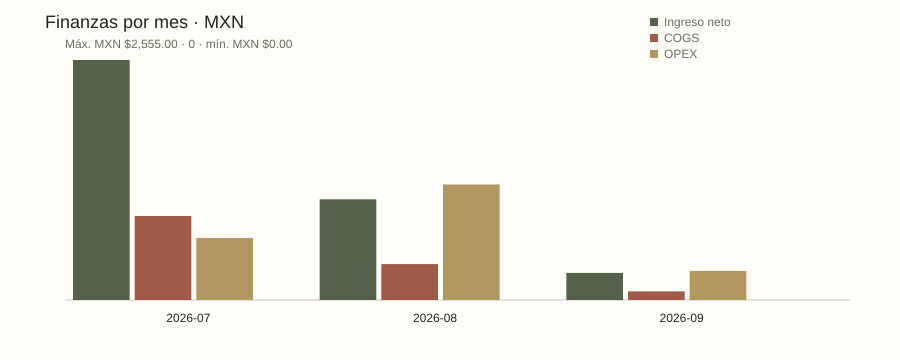
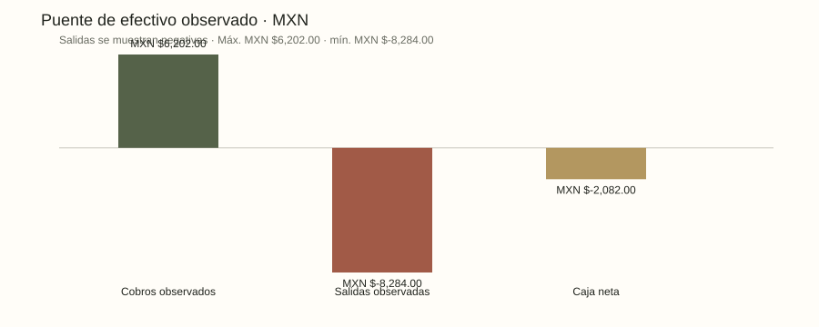
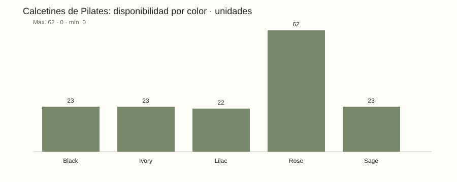

Alma de Lujo — reporte analítico
Corte: 2026-09-21 · escenario: normal · estado: PASS
Hallazgos calculados
- Ingresos netos reconocidos: MXN $3,916.00.
- Valor de inventario a costo: MXN $38,447.00.
- 0 SKU(s) con estado de revisión, reposición o agotado en este escenario sintético.
- 8 color(es) presentes en el inventario sintético.
Puente financiero
| Componente | Valor |
|---|---|
| Ingreso bruto | MXN $4,031.00 |
| Descuentos | MXN $15.00 |
| Notas de crédito | MXN $100.00 |
| Ingreso neto | MXN $3,916.00 |
| COGS | MXN $1,368.00 |
| Utilidad bruta | MXN $2,548.00 |
| Margen bruto | 65.07% |
| OPEX | MXN $2,200.00 |
| Gastos variables | MXN $1,350.00 |
| Contribución | MXN $1,198.00 |
| Proxy operativo | MXN $348.00 |
| Cobros observados | MXN $6,202.00 |
| Salidas observadas | MXN $8,284.00 |
| Caja neta | MXN $-2,082.00 |


Inventario y color
| SKU | Color | En mano | Reservado | Disponible | Tránsito | Estado |
|---|---|---|---|---|---|---|
| var-sock-black | Black | 23 | 0 | 23 | 0 | SLOW |
| var-sock-ivory | Ivory | 24 | 1 | 23 | 0 | SLOW |
| var-sock-rose | Rose | 62 | 0 | 62 | 0 | HEALTHY |
| var-sock-sage | Sage | 23 | 0 | 23 | 0 | SLOW |
| var-sock-lilac | Lilac | 22 | 0 | 22 | 0 | SLOW |
| var-legging-black | Black | 29 | 0 | 29 | 6 | SLOW |
| var-legging-navy | Navy | 10 | 0 | 10 | 0 | SLOW |
| var-top-black | Black | 12 | 0 | 12 | 0 | PRELAUNCH |
| var-top-sand | Sand | 12 | 0 | 12 | 0 | PRELAUNCH |
| var-short-black | Black | 11 | 0 | 11 | 0 | SLOW |
| var-short-coral | Coral | 12 | 2 | 10 | 30 | SLOW |
| var-wrap-sand | Sand | 0 | 0 | 0 | 0 | PRELAUNCH |

Canales y cohortes
| Canal | Visitas | Órdenes | Conversión |
|---|---|---|---|
| DM | Sin datos | 2 | Sin datos |
| 620 | 3 | 0.48% | |
| Organic | 300 | 2 | 0.33% |
| Paid Social | 410 | 1 | 0.24% |
| Cohorte | Clientes | Maduros 30d | Recompra | Tasa |
|---|---|---|---|---|
| 2026-07 | 2 | 2 | 0 | 0.00% |
| 2026-08 | 1 | 1 | 0 | 0.00% |
Compras y catálogo
| Compra | Proveedor | SKU | Pedidas | Recibidas | Estado |
|---|---|---|---|---|---|
| po-001 | Synthetic Grip Goods | var-sock-rose | 40 | 40 | received |
| po-002 | Synthetic Studio Textiles | var-legging-black | 24 | 18 | partial |
| po-003 | Synthetic Studio Textiles | var-short-coral | 30 | 0 | in_transit |
| Producto | Categoría | Colección | Ciclo |
|---|---|---|---|
| Grip Pilates Socks | Pilates socks | Studio Essentials | launched |
| Flow Leggings | Sportswear | Flow | launched |
| Sculpt Studio Top | Sportswear | Studio Essentials | sample |
| Move Biker Shorts | Sportswear | Move | clearance |
| Recovery Wrap Concept | Sportswear | Future Concepts | idea |
Fuentes, autoridad y límites
- Catálogo público Alma de Lujo · autoridad: Alma de Lujo; cobertura: Usuario confirmó ropa deportiva y calcetines de Pilates multicolor.; límite: Acceso automático sin contenido verificable. Prendas, precios y colores exactos pendientes de confirmación.; enlace HTTPS
- MOPRADEF 2025 · autoridad: INEGI; cobertura: Contexto nacional de actividad física; cambio conceptual y metodológico en 2025.; límite: No mide demanda ni ventas de Alma o calcetines de Pilates. Comparabilidad temporal requiere revisar metodología.; enlace HTTPS
- Estudio de Venta Online 2026 · autoridad: AMVO; cobertura: Página pública del estudio de comercio electrónico mexicano.; límite: Resumen descargable requiere formulario; no se descargó ni se usaron cifras. Mercado agregado no demuestra oportunidad específica.; enlace HTTPS
- Interés de búsqueda: Pilates y calcetines · autoridad: Google Trends; cobertura: Fuente candidata; sin extracción ni observación realizada.; límite: Interés relativo no equivale a demanda, tamaño de mercado ni ventas.; enlace HTTPS
Experimentos
EXP-SOCKS-01: Validar calcetines de Pilates como producto principal
Hipótesis: La preferencia expresada por la dueña podría traducirse en contribución por visita superior al resto del catálogo.
Métrica primaria: Contribución por visita elegible con costo y atribución completos
Guardarraíl: Tasa de devolución <= 10%, ningún SKU sobrevendido; costos y tráfico conocidos
Ventana: 28 días desde aprobación; no detener por resultados favorables tempranos
Población: Visitas nuevas elegibles asignadas aleatoriamente 1:1 a dos vitrinas con igual precio y exposición
Criterio de cierre: Antes de iniciar: fijar MDE y muestra con baseline. Cerrar a 28 días; si falta muestra o trazabilidad => INCONCLUSO. Sin baseline no lanzar ni afirmar causalidad.
Referencias: market/instagram-brand, inventory
EXP-COLOR-02: Preferencia de color de calcetines
Hipótesis: Las solicitudes de color pueden orientar un siguiente lote pequeño.
Métrica primaria: Proporción de intención explícita por color entre respuestas válidas
Guardarraíl: Una respuesta por participante sintético; registrar sin preferencia y faltantes; no comprar automáticamente
Ventana: 14 días desde aprobación
Población: Participantes que voluntariamente responden una encuesta; sesgo de autoselección explícito
Criterio de cierre: Consolidar conteos y cobertura al día 14; menos de 30 respuestas => INCONCLUSO. Intención no demuestra compra.
Referencias: inventory, market/instagram-brand
Decisiones y evidencia
decision-5542e226a62415e4 · REVIEW
Hechos y evidencia:
- El conjunto es sintético y no representa ventas reales. — meta/synthetic
- Estado de reconciliación: PASS — quality
Desconocidos: Demanda real, costos y precios reales, operación de la dueña y catálogo exacto pendientes. · No existe baseline para atribuir impacto incremental.
Hipótesis: Calcetines de Pilates: candidato a producto principal, según el usuario; pendiente de validación.
decision-5542e226a62415e4-finance · REVIEW
Hechos y evidencia:
- El resultado operativo y el efectivo observado son medidas separadas en este caso sintético. — kpis/operating_proxy_cents, kpis/net_cash_cents
- El costo de venta usa costos estándar de artículos entregados, con reversión de restock. — kpis/cogs_cents
Desconocidos: Demanda real, costos y precios reales, operación de la dueña y catálogo exacto pendientes. · No existe baseline para atribuir impacto incremental.
Hipótesis: El calendario de compras y cobros puede explicar diferencias entre resultado y efectivo; requiere revisar eventos.
decision-5542e226a62415e4-growth · REVIEW
Hechos y evidencia:
- Existen diseños de experimento pendientes de aprobación; no hay resultados de experimentos reales. — experiments
- El tráfico por canal conserva los denominadores desconocidos. — channels
Desconocidos: Demanda real, costos y precios reales, operación de la dueña y catálogo exacto pendientes. · No existe baseline para atribuir impacto incremental.
Hipótesis: Calcetines de Pilates multicolor: candidato a producto principal comunicado por el usuario.